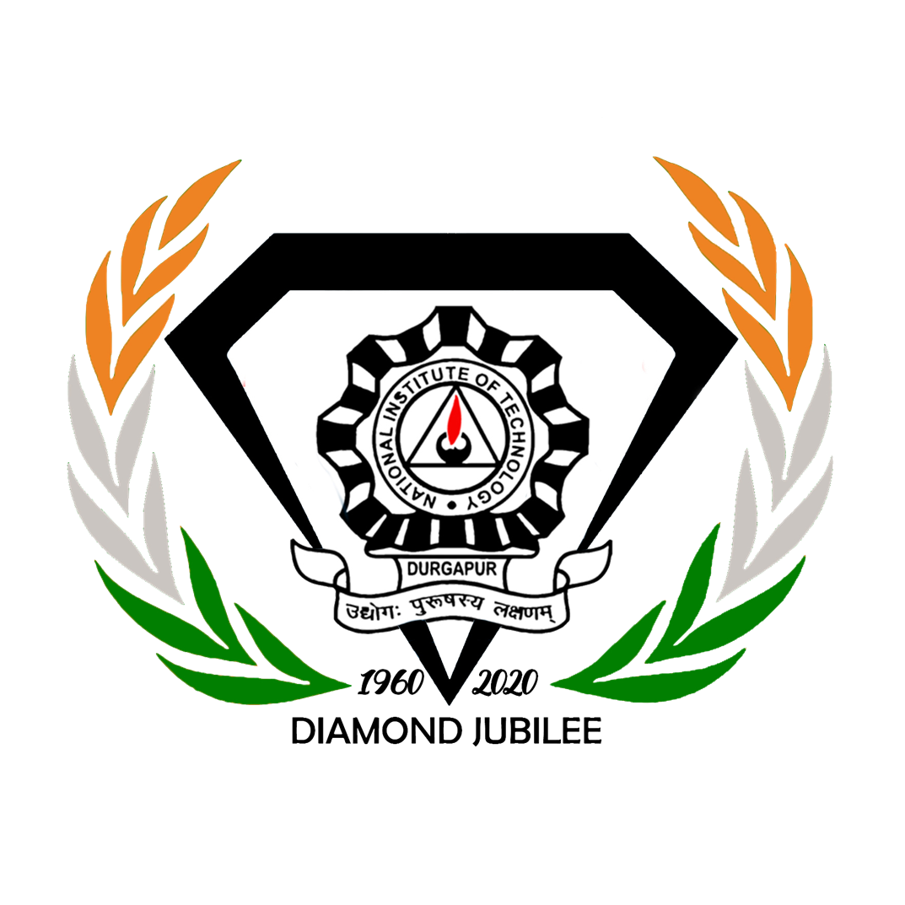

|
Pranoy Ray
Research |
Experience |
Education |
Blog
pranoyr [at] outlook [dot] com
I am a Materials Science Researcher by training, who is deeply interested in Materials Informatics. My aim is to pursue research to develop and predict new materials with tailored properties using ML-driven approaches. in an attempt to empower the next generation of sustainable materials in the aerospace and automobile industries.
When I'm not innovating through research, I love to fiddle with new technologies and learn new management techniques to apply them in my future startup establishment aspirations.
When I don't </>, I try to learn and understand the math behind AI and HPC.
CV /
Google Scholar /
LinkedIn /
Github /
Twitter
|
|
News
- [February 2021] Re-joined as a Research Assistant on two research projects at BARC
- [October 2020] Recieved an admit to join GeorgiaTech as a PhD student in Summer 2021
- [August 2018] My Startup featured in the news [open] [news article]
|
Publications & Conferences
- High capacity reversible hydrogen storage in titanium doped 2D carbon allotrope Ψ-graphene: DFT invtigations
Authors: B. Chakraborty, P.Ray, N. Garg, S. Banerjee
Elsevier - International Journal of Hydrogen Energy [Vol. 46 Issue 5]
Full Length Article - November 2020 [open]
- Ti-doped PSI-Graphene as an Efficient Medium for Hydrogen Storage
Authors: Pranoy Ray, Brahmananda Chakraborty
Department of Atomic Energy Computational Chemistry Symposoium 2019, Govt. of India
Poster - PUBLISHED in Proceedings (under Board of Research for Nuclear Sciences)
[open]
|
Research Experiences & Subsequent Projects

|
Research Assistant
Bhabha Atomic Research Centre Mumbai, India [open]
July 2019 to Nov 2020
Feb 2020 - Present
◦ Completed a project where we predicted a Novel Material System for Hydrogen Storage
(Research Paper Published)
◦ Completed a project which involved prediction of a new Material System using DFT (Density Functional Theory), Bader Charge Ananlysis & MD Simulations.
◦ Poster Presented at DAE CCS 2019, and Abstract published in proceedings
◦ Prediction of Nuclear Coolant Materials for MSRs, HP & SRPD - This project was conducted under the supervision of Dr. B. Chakraborty (Scientist G, BARC). The variation of properties of fluoride and chloride salts against various factors & conditions were studied.
|

|
Research Intern
Indian Institute of Technology Bombay, India [open]
July 2020 - Nov 2020
Worked on a Materials Informatics project using the Random Forest - Machine Learning Algorithm in Python. The determination of Mechanical Properties of various binary and ternary alloys with the aid of Materials Informatics and ML-driven approaches was analyzed. [weblink]
|

|
Research Intern
Indian Institute of Technology Kharagpur, India [open]
June 2020 - Oct 2020
◦ Worked on a Phase-Field Modelling project involving DFT & MD Simulations.
◦ Managed Collaborations with Washington University at St. Louis & IIT Kanpur
|
|
|
Project & Industrial Intern
Hindustan Aeronautics Limited [open]
May 2018 to July 2018
Completed two Projects, namely: [open]
◦ The Identification of Post Investment Casting Defects
◦ Preventive Measures for Quality Control using Lean Management
|
| 
|
Undergraduate Research Assistant
Physics Department, NIT Durgapur
Summer-Winter 2017
Determination of Water Contamination Content Profile in a Steel Plant Belt(Durgapur)- This project was completed under the supervision of Dr. Hirok Chaudhari (Prof.of the Physics Department, NITD). The determination of the content profile and their effect in our daily lives, besides a few other detrimental physical factors were measured, which were further used as inputs to fabricate an anti-polluting membrane.
|
|
Technical Skills
- [Programming Languages] : Python, Java, R, C, LaTeX
- [Simulation Packages] : VASP, LAMMPS
- [Softwares] : VESTA, Origin, THERMOCALC, Ovito, BlueJ, Adobe Photoshop, MS Word, MS Excel, MS Power-Point
- [Frameworks] : Shell Scripting, Flask, PyQt4, PyCalphad
|
Education
|
|
Bachelor of Technology, Metallurgical and Materials Engineering
National Institute of Technology Durgapur, India [open]
July 2016 - June 2020
Passed with First Class
Defended undergradute thesis "Study of microstructure-property and wear behaviour of hypereutectic Al-17Si alloy" [open]
Supervisors : Prof. K.S.Ghosh and Prof. B.K.Show, MME, NIT Durgapur
|
|
|
High School
Don Bosco School Park Circus [open]
April 2002 - April 2016
Class 12 Passed with 95.25% (ISC 2016)
Class 10 Passed with 94.60% (ICSE 2014)
|
|
Grants & Accolades
- [NIT Durgapur] Travel Grant to present my poster at DAE-CCS 2019 (Mumbai)
- [Coursera] Grant of Financial Aid to pursue Stanford University's ML Course
|
|
 https://orcid.org/0000-0002-2589-1642
https://orcid.org/0000-0002-2589-1642{kind=link}